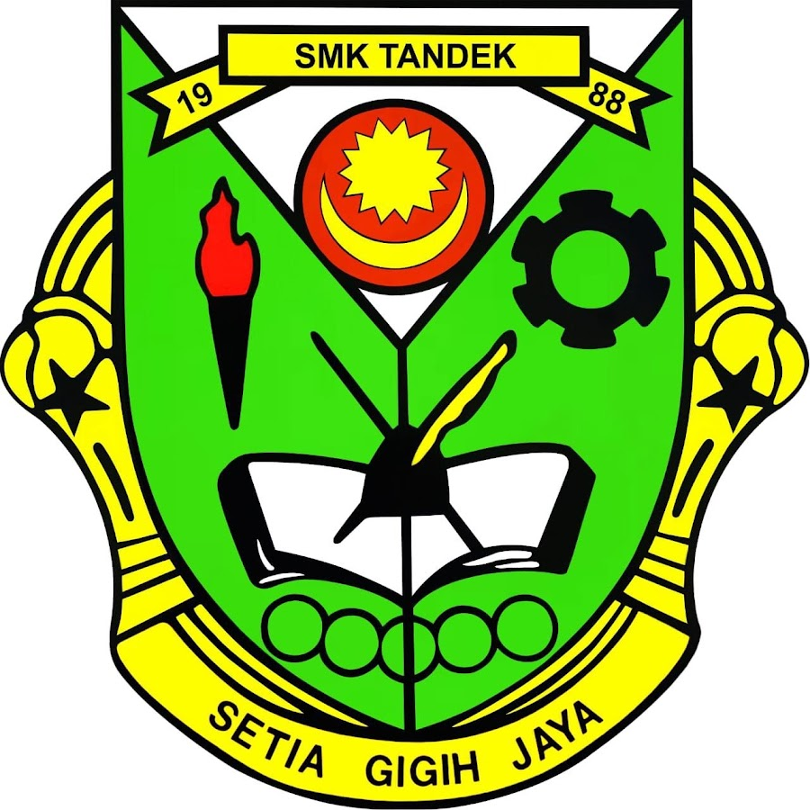

SPM - I am proud to highlight that my educational journey culminated at SMK Tandek in 2013, where I not only successfully completed my studies but also demonstrated academic excellence during the SPM examination, achieving an impressive 9A grades. This experience not only honed my knowledge but also instilled in me a strong foundation for continued growth and success.
STPM - Building on my academic achievements, I furthered my education by successfully completing STPM at SMK Tandek in 2015, attaining a commendable 4.0 pointer. This experience enhanced my analytical and critical thinking skills, laying the groundwork for a well-rounded academic foundation.

I pursued a Bachelor of Office System Management at Universiti Teknologi MARA, successfully completing the program in 2018 with a notable 3.73 pointer. This experience not only equipped me with a comprehensive understanding of office systems but also honed my organizational and managerial skills. The high academic achievement reflects my commitment to excellence and attention to detail.